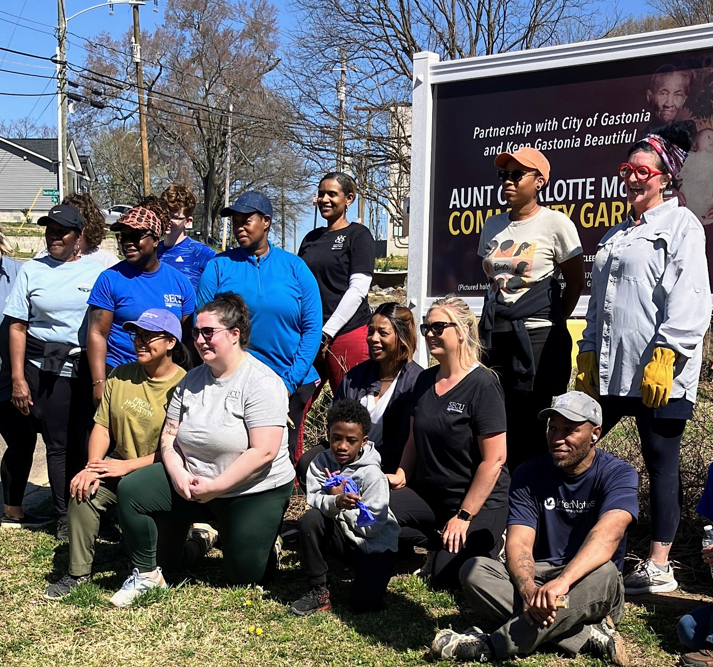
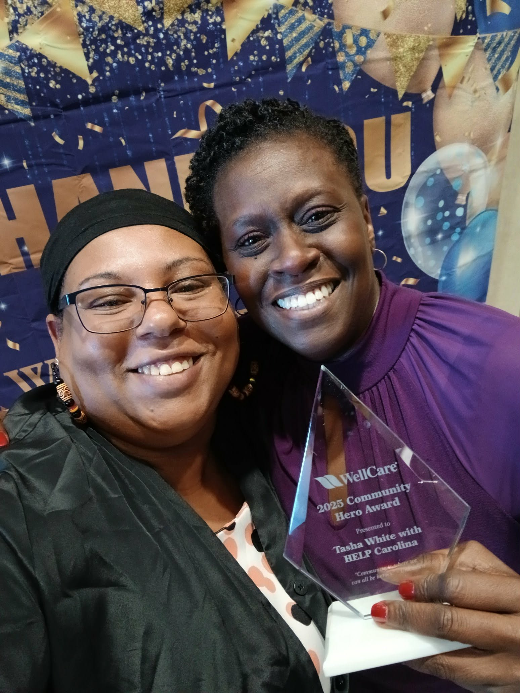
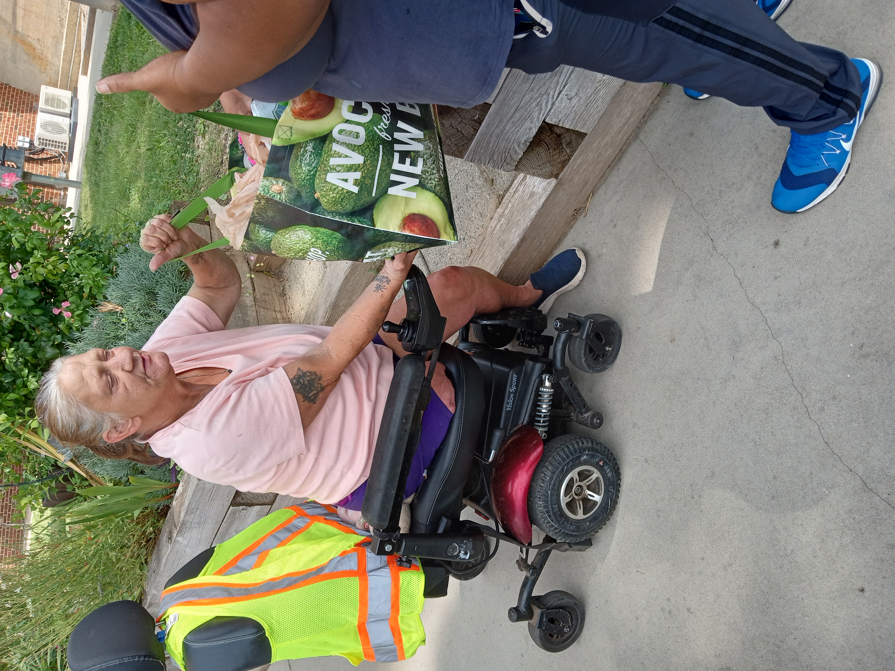
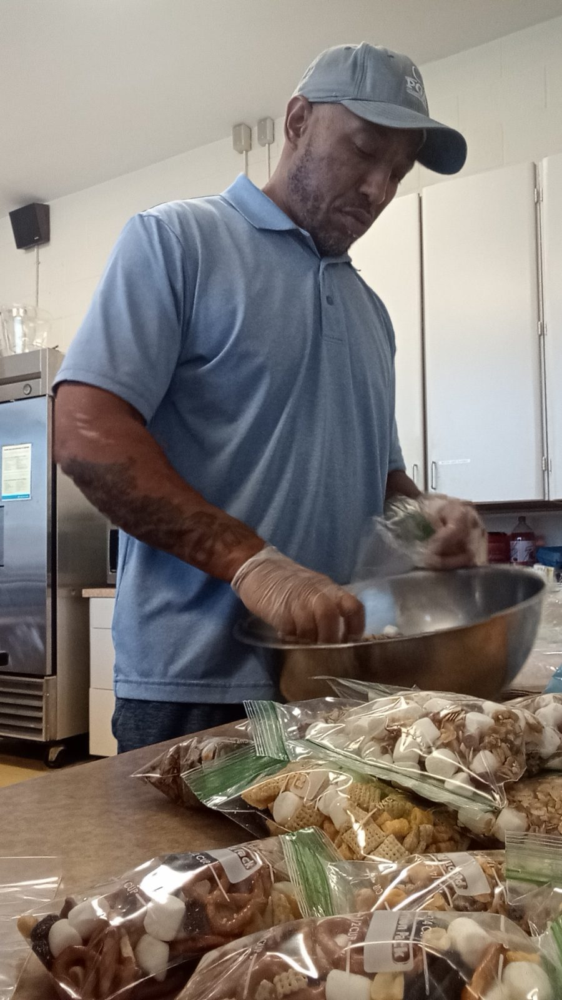
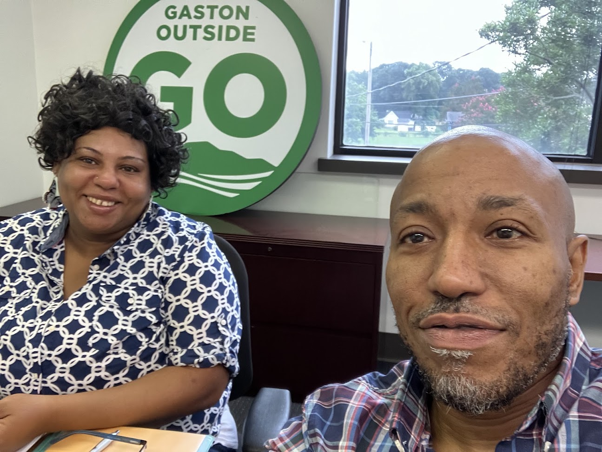

Dignity-First Access
Self-attestation is enough. No government ID required, no proof of release, and zero questions asked regarding past charges or background.
Mobile Connectivity
Mobile 5G hotspots powered by proposed agreements on reliable network infrastructure, giving households stable access to work and family.
Local Advocacy
Grounded in Gaston County, NC. We collaborate with local small businesses, reentry partners, and community stakeholders to drive lasting change.
Grassroots Leadership in Motion
From food pantry deliveries and community garden cleanup to local partner meetings and hero award recognitions—we are actively building relationships on the ground.

Aunt Charlotte Community Garden
Gaston County partners coming together for neighborhood enhancement and youth engagement.

2025 Community Hero Award
Celebrating community heroes and local re-entry partners dedicated to HELP Carolina and Gaston County.

Direct Care & Food Deliveries
Volunteering directly to support residents with mobility needs and fresh groceries.

Community Meal Prep
Preparing essential snack packs and meals for local outreach programs.

Local Collaboration
Planning digital equity and re-entry initiatives with Gaston partners.
Where Your Support Goes
Direct your gift where it will make an immediate impact for returning citizens and families in Gaston County.
Stay Close Fund
Directly purchases mobile hotspot devices and covers monthly cellular data subscriptions for connected households.
General Fund
Keeps our volunteer-led organization operating smoothly, ensuring tax-exempt compliance, outreach, and administrative stability.
Emergency Fund
Provides rapid micro-grants for essential IDs, transportation vouchers, and urgent re-entry necessities.